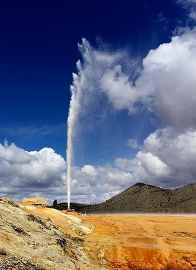

Soda Springs
Weather Summary
Five Day Forecast
Welcome to Soda Springs
Soda Springs is located next to the Alexander Reservoir in the Bear River Valley. Past volcanic activity has shaped the landscape, and the residual geothermal activity has caused the numerous hot bubbling springs that gave it its name. Scenery reminiscent of Yellowstone is found at the famous man-made geyser in the center of town, as well as the inactive hot springs at Formation Cave. Large lava flows cover the plains north of town, which still protrude from the farmland in numerous places in the vicinity. The China Cap and China Hat are two volcano cones that stand several miles to the north. Surrounding Soda Springs there are beautiful, forested mountains, especially the Bear River Range to the south, and the Aspen Mountains to the east.
The Oregon Trail passed through Soda Springs, which was then known as the “Oasis of Soda Springs”. It was looked to as a major landmark between Fort Laramie and Fort Boise. In 1863 Soda Springs Post, commonly known as Fort Conner, was established by Col. P. Edward Conner, making Soda Springs the second oldest settlement in Idaho. Later on, the advent of the railroad, and then U.S. Highway 30 have established its permanence. In the year 2000, it had a population of 3,381 inhabitants...
On November 30, 1937, a well drilling operation unwittingly released Soda Spring’s famous man-made geyser which surprised everyone by shooting dozens of feet into the air. It has been capped and a timer activates it once every hour. Geothermal activity hundreds of feet below the ground heats water and mixes in carbon dioxide gas. Soda Springs gets it’s name from the naturally carbonated water. The resulting increased pressure contributes to the number of springs and was the cause of the surprising. It now stands in a park covered with Yellowstone-like formations. The other hot springs include Octagon Spring, Hooper Spring and Big Spring. For a time the carbonated water was bottled and sold, and was a factor in the development of America’s carbonated drink industry.
Phosphate mining is a big contributor the local economy with the Montsano mine just north of town, as well as the Conda mine further to the northeast. In addition to its man-made geyser, Soda Springs also boasts a man-made lava flow, from the dumping of molten rock left over from the mining process...
Upcoming Events:
Contact Us
Address:
Welly Weather Head Office
Stewart Duff Drive
Rongotai, Wellington
Phone:
+64 4-385 5100
Email:
info@wellyweather.co.nz